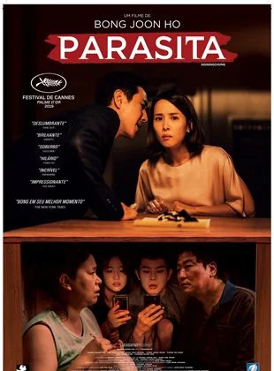

Filmes Favoritos
A última carta e amor
Ano: 2021
Diretor: Augustine Frizzell | Roteiro Nick Payne, Esta Spalding
Resumo: A Última Carta de Amor acompanha entre o passado e o presente, a jovem Jennifer Stirling (Shailene Woodley) após acordar sem memória, nos anos 60 em Londres. Com isso, ela descobre que escreveu várias cartas de amor para um amante chamado Anthony O’Hare (Callum Turner), com o qual estava disposta a arriscar seu casamento. Quarenta anos depois, a jornalista Ellie Haworth (Felicity Jones) encontra as mesmas correspondências e decide investigar o que aconteceu no passado, enquanto tenta lidar com os problemas de seu próprio relacionamento.
Nota: 2,5
Principais comentários:
muito fiel ao livro, com pequenos detalhes sendo deixados de lado, mas sem interferir de nenhum modo no enredo principal.
Minha opinião: Já assisti a vários filmes do gênero. #emalgumlugardopassado #umacartapararomeuejulieta #derrepenteamor #questãodetempo #diariodeumapaixão são filmes desencontros e encontros, passado, presente e futuro. Uma coisa que todos eles tiveram foi #quimica entre os atores, que envolveram nos expectadores para dentro do filme, criaram em nos expectativas e de torcer para que tudo desse certo. Tudo isso a um bom roteiro tornou estes filmes ícones em seu gênero e esta em nossas memorias até hoje. Sempre queremos ver novamente. Neste filme “A ultima carta de Amor” tentou mas não conseguiu. Não houve a química entre os atores e olha que no casal 2 sentimos mais química que nos principais. Uma pena. Não nos prende em expectativa nem emoção. Roteiro: bom (é do gênero) mas os protagonistas, não colaram. Música: Faltou aquela música que marcasse o casal Vale apena assistir? Não, mas se não tiver opção.
Barbie
Ano: 2023
Diretor: Greta Gerwig | Roteiro Greta Gerwig, Noah Baumbach
Resumo: No fabuloso live-action da boneca mais famosa do mundo, acompanhamos o dia a dia em Barbieland - o mundo mágico das Barbies, onde todas as versões da boneca vivem em completa harmonia e suas únicas preocupações são encontrar as melhores roupas para passear com as amigas e curtir intermináveis festas. Porém, uma das bonecas (interpretada por Margot Robbie) começa a perceber que talvez sua vida não seja tão perfeita assim, questionando-se sobre o sentido de sua existência e alarmando suas companheiras. Logo, sua vida no mundo cor-de-rosa começa a mudar e, eventualmente, ela sai de Barbieland. Forçada a viver no mundo real, Barbie precisa lutar com as dificuldades de não ser mais apenas uma boneca - pelo menos ela está acompanhada de seu fiel e amado Ken (Ryan Gosling), que parece cada vez mais fascinado pela vida no novo mundo. Enquanto isso, Barbie tem dificuldades para se ajustar, e precisa enfrentar vários momentos nada coloridos até descobrir que a verdadeira beleza está no interior de cada um.
Nota: 5
Principais comentários:
Com mensagens importantes e poucos momentos divertidos. Barbie entretem, apesar das maiorias da piadas não funcionarem comigo, mas vale pela mensagem
O filme não tem lacração como alguns dizem, eles utilizam pautas contra o patriarcado e não contra o homem em si, se você se ofendeu talvez o problema esteja em você. Atuações da Margot e Ryan estão ótimas, o cenário é muito bem feito, fizeram um grande trabalho. A única coisa que realmente me incomodou foi a redundância nos discursos, poderiam ter dosado melhor para não ficar repetitivo e tornar a mensagem mais sofisticada.
O poderoso chefão
Ano: 2022
Diretor: Francis Ford Coppola
Resumo: Conta a história da família Corleone, com foco em Vito (Marlon Brando) e Michael (Al Pacino), narrando a jornada do relutante filho de gangster que aos poucos, seja por desejo de vingança o u necessidade de proteger sua família, se vê assumindo a liderança da organização criminosa que anteriormente esteve sob poder de seu pai.
Nota: 4,8

Principais comentários:
Simplesmente o maior filme da história! Marlon Brando e Al Pacino perfeitos!
Francis Ford Coppola transforma "O Poderoso Chefão",em um marco na história do cinema,e principalmente de sua carreira.Consegue montar uma história fenomenal,com personagens marcantes.E não podendo esquecer,da "Família Corleone",que extremamente sangrenta,faz o filme ser tenso e cheio de expectativas nos componentes.O começo tem uma narrativa brilhante,nos levando calmamente para o centro das atenções que no caso é Don Vito Corleone,vivido por Marlon Brando.Coppola não explora somente o mundo do crime e da máfia,mas também,os diálogos e principalmente os dilemas trabalhado em cima da convivência entre família e amigos.O que chama bastante atenção,são os momentos violentos como explosões e brigas,durante todo o filme,podemos presenciar essas cenas.Tudo isso,sendo observado no olhar atento de Don Corleone,que é frio e responde a altura as ameaças.O elenco participa de forma exemplar,e não tem como passar despercebido Marlon e Al Pacino.Ambos tem atuações distintas,já que do meio até o fim,se separam,e começam a atuarem individualmente.Me rendi as aparições desses dois sujeitos,que mostra como é fácil atuar de forma perfeita.
Parasita
Ano: 2019
Diretor: Bong Joon Ho | Roteiro Bong Joon Ho, Jin Won Han
Resumo: Em Parasita, toda a família de Ki-taek (Song Kang Ho) está desempregada, vivendo num porão sujo e apertado. Uma obra do acaso faz com que o filho adolescente da família comece a dar aulas de inglês à garota de uma família rica. Fascinados com a vida luxuosa destas pessoas, pai, mãe, filho e filha bolam um plano para se infiltrarem também na família burguesa, um a um. No entanto, os segredos e mentiras necessários à ascensão social custarão caro a todos.
Nota: 4
Principais comentários:
Filme muito ruim. É bem dirigido... e só. História cheia de esteriótipos e clichês. Parece uma mistura de comédia pastelão com fimes de terror lado B.
Diria que o filme é impactante, pois através de forma que de início parece até cômica faz uma crítica profunda à sociedade sul coreana. Também é um filme tenso que prende a atenção dos espectadores do início ao fim. Essa crítica social caberia perfeitamente a outros países e não apenas à Coréia do Sul